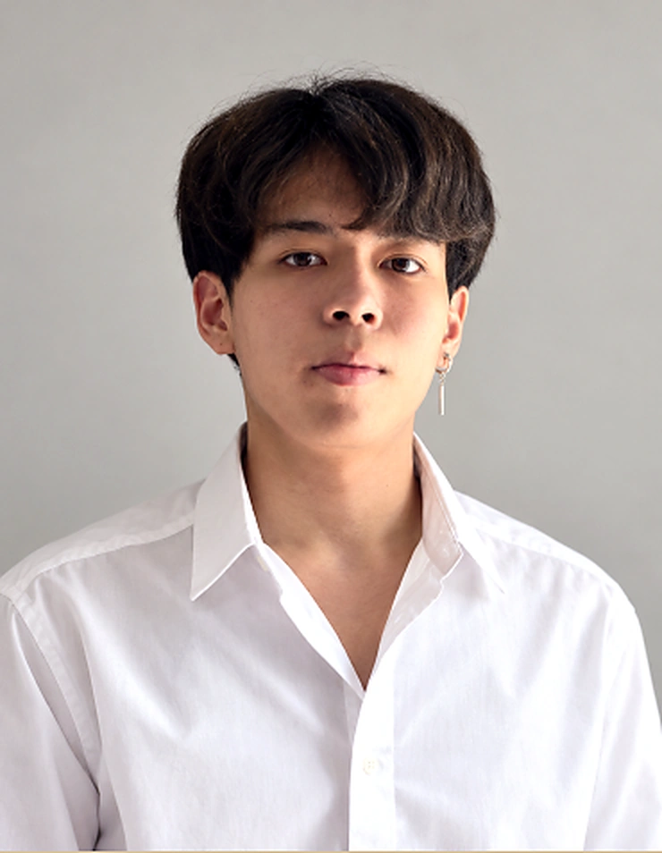
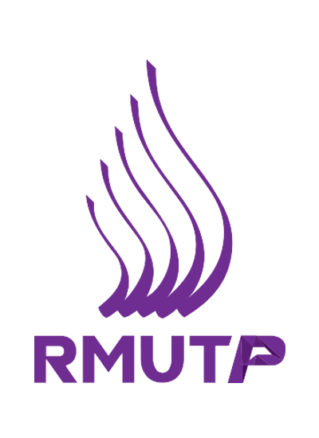
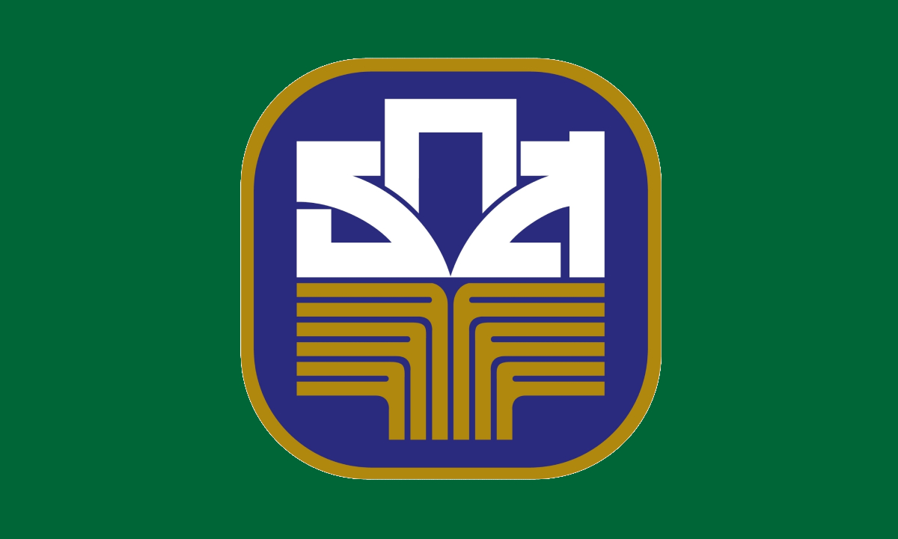

PERSONAL PORTFOLIO2026 / BANGKOK
COMPUTER ENGINEERING GRADUATE
ธนกฤต แซ่กิมเชื่อมเทคโนโลยี
กับการใช้งานจริง.
Thanakit Saekim
จากข้อมูลสู่สิ่งที่เข้าใจง่าย จากปัญหาสู่แนวทางแก้ไข
พร้อมเรียนรู้และเติบโตไปกับความท้าทายใหม่ในโลกเทคโนโลยี
⌖ Bangkok, ThailandAI · Data · Web · IT Support
HUMAN BEHIND THE TECHNOLOGY✳AI▥DATA</>
ธนกฤต แซ่กิมComputer Engineering↗
learn. build. improve.
+01 / INTRODUCTION
SCROLL TO EXPLORE ↓
COMPUTER ENGINEERING ✳ ARTIFICIAL INTELLIGENCE ✳ DATA VISUALIZATION ✳ PROBLEM SOLVING
01 / ABOUT ME
พื้นฐานวิศวกรรม
มุมมองที่ใส่ใจผู้ใช้.
ENGINEERING PROFILE⌘
01const focus = [
02 "Artificial Intelligence",
03 "Data & Visualization",
04 "Web & IT Support"
05];
ความสนใจที่พร้อมต่อยอด
ผมเป็นบัณฑิตวิศวกรรมคอมพิวเตอร์ที่สนใจการนำเทคโนโลยีมาช่วยให้งานและชีวิตของผู้ใช้ง่ายขึ้น
มีประสบการณ์จัดการข้อมูลด้าน PDPA จัดทำรายงานและ Visualization ร่วมปรับปรุงเว็บไซต์ และสนับสนุนผู้ใช้งานด้านไอทีในทางฮาร์ดแวร์ พร้อมทักษะดูแลทีมบริการและประสานงานจากประสบการณ์ทำงานระหว่างเรียน

วิศวกรรมศาสตรบัณฑิต · วิศวกรรมคอมพิวเตอร์มหาวิทยาลัยเทคโนโลยีราชมงคลพระนครพ.ศ. 2564–2569 / GPA 2.67
02 / SELECTED WORK
เรียนรู้ผ่านการลงมือทำ.
AI LIBRARIANCONCEPT / 01
Knowledge,
connected.ผู้ช่วยห้องสมุดอัจฉริยะ
ภาพแนวคิดประกอบโครงงานGRADUATION PROJECTAI / UI DESIGN
AI Librarian
ผู้ช่วยห้องสมุดอัจฉริยะ
ประยุกต์โมเดล AI ที่เปิดให้ใช้ฟรี เพื่อจัดการข้อมูลห้องสมุดและตอบคำถามผู้ใช้ภายในมหาวิทยาลัย
- ออกแบบส่วนติดต่อผู้ใช้ของแอปพลิเคชัน
- ฝึก AI และทดสอบการใช้งานระบบ
- จัดทำโปสเตอร์ PowerPoint และรายงานโครงงาน
INTERNSHIPDATA / WEB

ธ.ก.ส. · ฝ่ายธรรมาภิบาลข้อมูลที่พร้อมนำไปใช้งาน
จัดการข้อมูล PDPA จัดทำ Visualization และร่วมปรับปรุงเว็บไซต์ส่วนงาน
ธนาคารเพื่อการเกษตรและสหกรณ์การเกษตร · ฝ่ายธรรมาภิบาล
03 / TOOLKIT
ทักษะที่พร้อมต่อยอด.
THE DIGITAL TOOLBOXสำรวจเครื่องมือที่เชื่อมไอเดียกับการลงมือทำ
PRODUCTIVITYMicrosoft
Office & presentation
ทักษะจากเรซูเม่
DEVELOPMENTProgramming
C++ · Python · Lua · Java · R
ภาษาโปรแกรม
DATA VISUALIZATIONPower BI
Data into understanding
ทักษะจากเรซูเม่
APP PLATFORMPower Apps
Ideas into applications
ทักษะจากเรซูเม่
WORKFLOW AUTOMATIONPower Automate
Connect · Flow · Automate
ทักษะจากเรซูเม่
01Programming
ภาษาโปรแกรม
C++PythonLuaJavaR
02Web & Database
เว็บไซต์และฐานข้อมูล
HTMLCSSMongoDBSQL
03Office & Data
เครื่องมือสำนักงานและข้อมูล
Microsoft OfficePower BIPower AutomatePower AppsPower Query
04Design
ออกแบบและสร้างสรรค์ผลงาน
PhotoshopBlenderFigma
BEYOND THE TOOLSดูแลทีมและมอบหมายงาน · ประสานงานระหว่างฝ่าย · แก้ปัญหาและจัดลำดับงาน · บริการลูกค้า · ละเอียดรอบคอบ
04 / EXPERIENCE
ทุกประสบการณ์
คือส่วนหนึ่งของการเติบโต.
จากงานบริการสู่งานเทคโนโลยี ฝึกทั้งการแก้ปัญหา การสื่อสาร และความรับผิดชอบต่อทีม
LANGUAGESไทย
อังกฤษ — TOEIC 385
พ.ศ. 2569Fiber Technician
ACC AISให้คำแนะนำและแก้ไขปัญหาอินเทอร์เน็ต อุปกรณ์ และบริการภายในบ้านของ AIS เบื้องต้น
INTERNSHIP BAAC · HEAD OFFICE
ปี 4 · ภาคเรียนที่ 1ฝึกงาน · ฝ่ายธรรมาภิบาล
ธนาคารเพื่อการเกษตรและสหกรณ์การเกษตรสำนักงานใหญ่ · จัดการข้อมูล PDPA ของพนักงาน จัดทำรายงานและ Visualization พร้อมร่วมปรับปรุงเว็บไซต์ของส่วนงาน
ระหว่างศึกษาชั้นปีที่ 3หัวหน้ารันเนอร์ / รองหัวหน้าครัว
Promp Pinkaoจัดลำดับออเดอร์ มอบหมายงานทีมเสิร์ฟ ดูแลลูกค้า และประสานงานกับครัวเพื่อความถูกต้องของออเดอร์
ระหว่างศึกษาชั้นปีที่ 2 · 5 เดือนพนักงานพาร์ตไทม์
Pizza Hut · สาขาตลาดท่าน้ำนนท์เตรียมอาหารในตำแหน่ง Make และจัดออเดอร์ให้ครบถ้วนและถูกต้อง
LEADERSHIP & ACTIVITIESรองประธานฝ่ายกีฬาและนันทนาการ
สโมสรนักศึกษาคณะวิศวกรรมคอมพิวเตอร์
ประธานอัตลักษณ์
มหาวิทยาลัยเทคโนโลยีราชมงคลพระนคร
05 / ACTIVITIES & MOMENTS
เติบโตผ่านประสบการณ์ร่วม.
อีกด้านของการเรียนรู้ คือการร่วมกิจกรรม การทำงานเป็นทีม และช่วงเวลาที่ได้เติบโตไปกับผู้คนรอบตัว
ภาพถ่ายจริงจากกิจกรรม · กดที่ภาพเพื่อดูเต็มกรอบ พร้อมเลื่อนดูภาพถัดไปได้